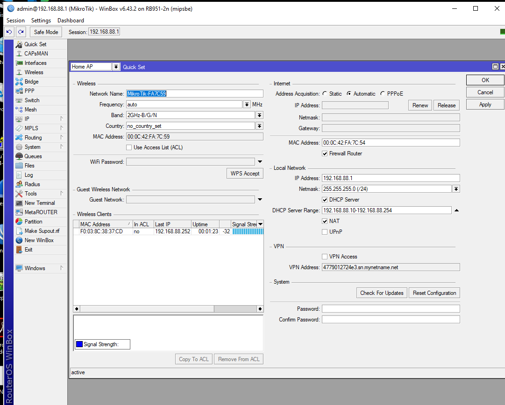
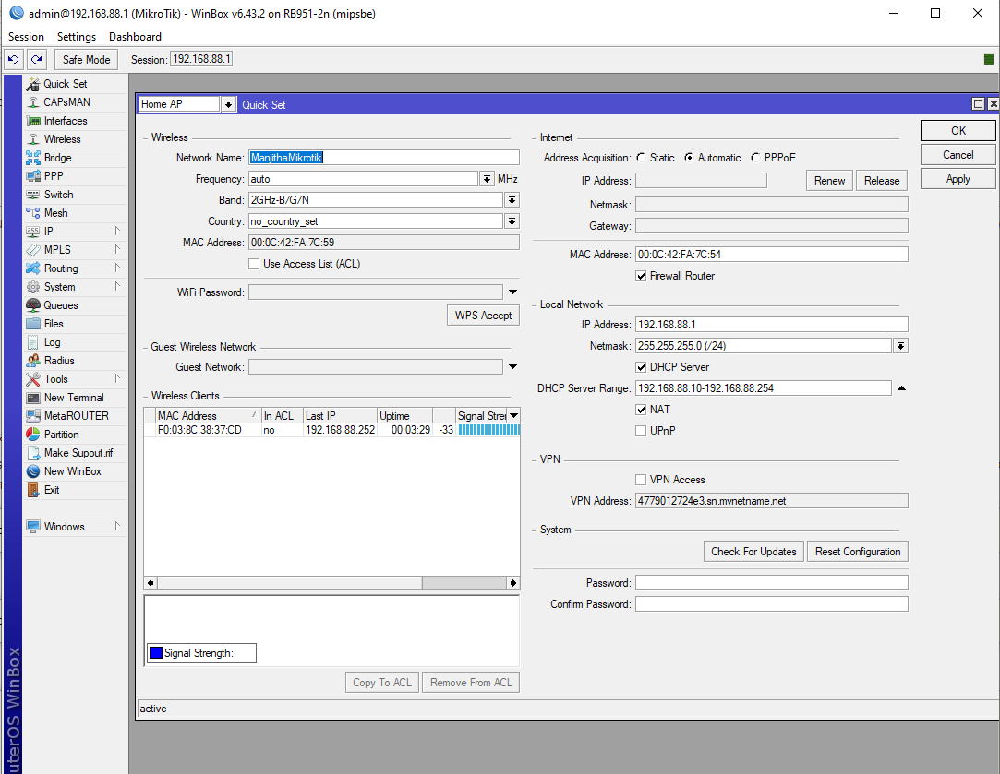
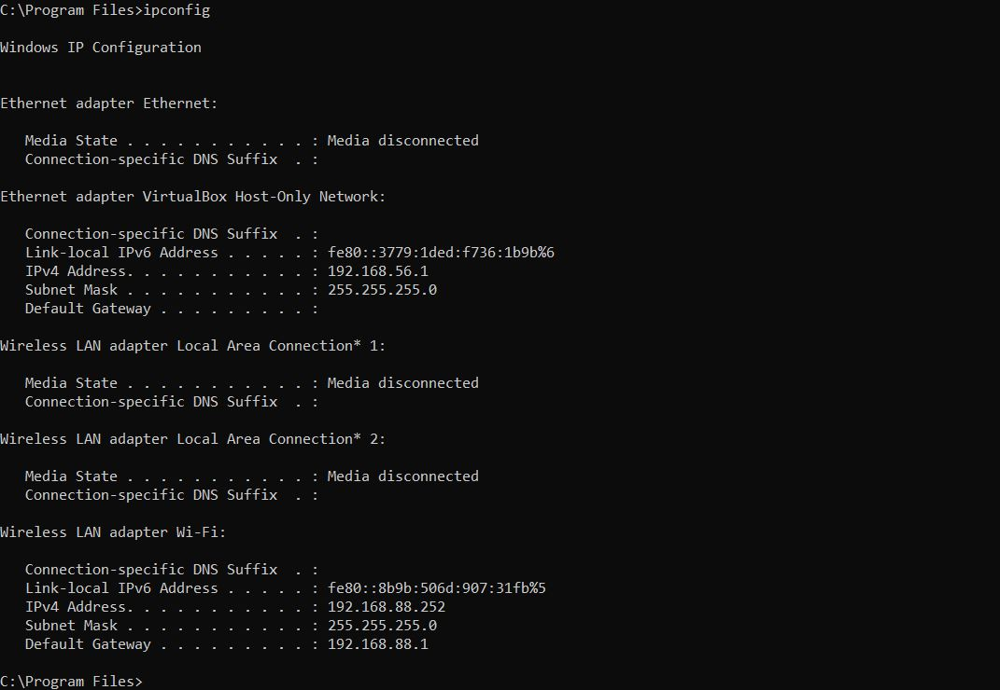
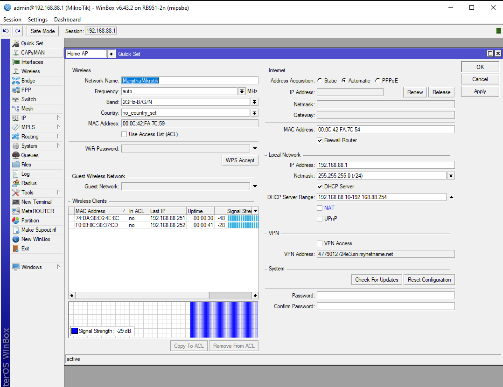
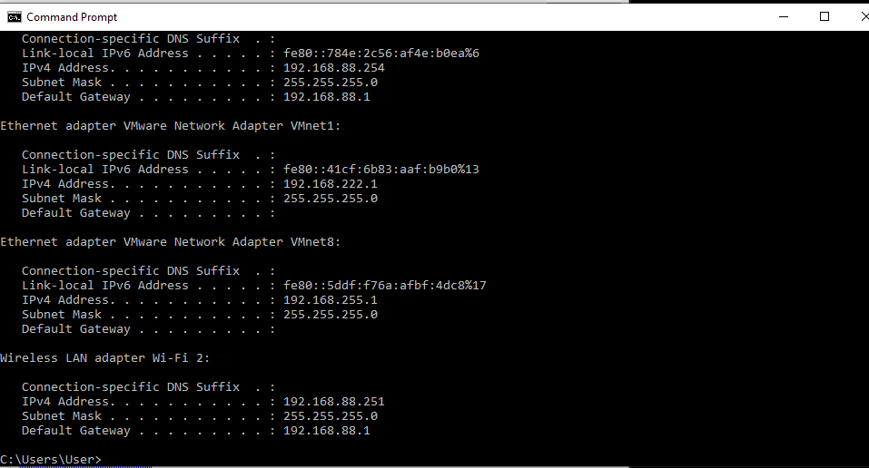
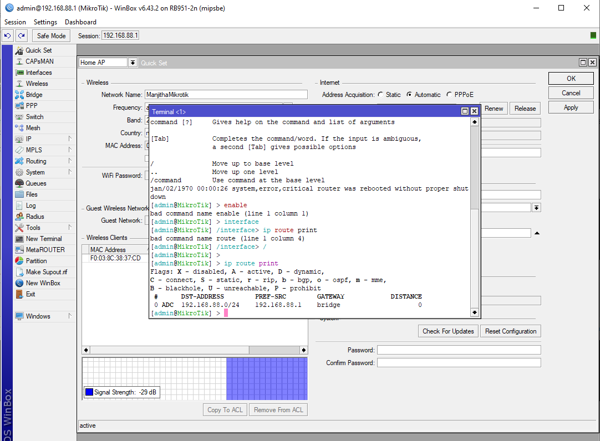
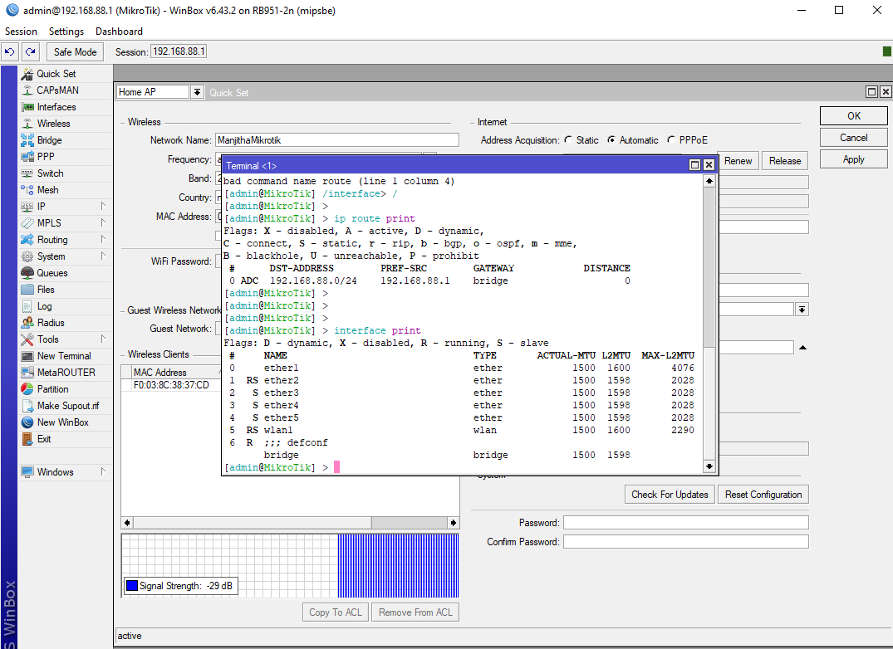

---
---
Class Work
Connection to RouterBOARD 951-2n
 RouterOS is a stand-alone operating system based on Linux kernel. It powers MikroTik hardware devices.
RouterOS is a stand-alone operating system based on Linux kernel. It powers MikroTik hardware devices.
Powering
The device accepts powering from the power jack or from the first ethernet port (Passive PoE). DC power jack (5.5mm outside and 2mm inside diameter, female, pin positive plug) accepts 8-30V
Reset Process
Hold the reset button during boot time until LED light starts flashing, release the button to reset RouterOS configuration.
Connection
Connect Ethernet Cable to port 1. Default IP address from LAN/WLAN is 192.168.88.1, open this address in web browser to start configuration. In windows, “Winbox” can be used with the same functions. The username is admin and there is no password.

I have changed the Network Name into ManjithaMikrotik and connected the router to my personal pc


The router is connected to the PC with mac address 74:DA:38:E6:4E:8C


Command Line Interface

